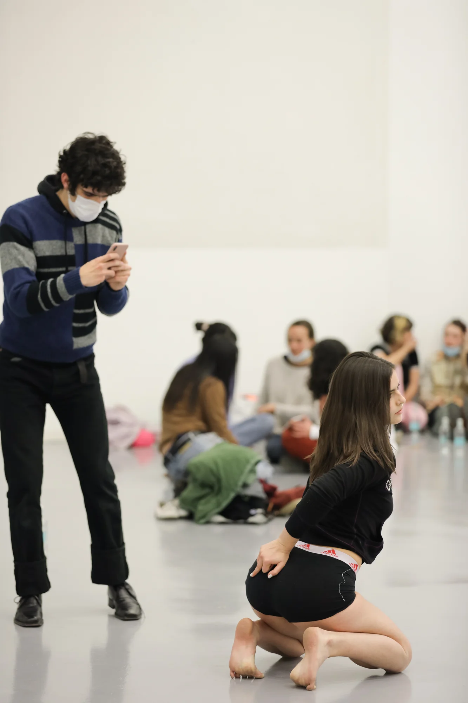
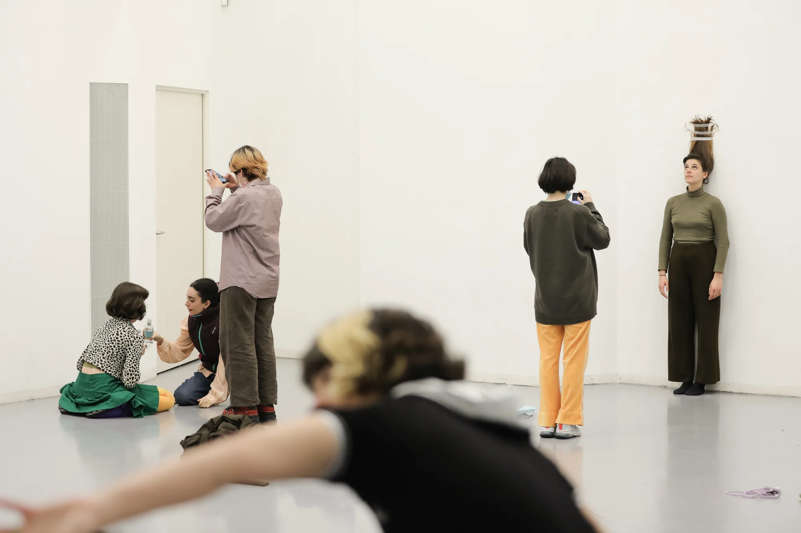
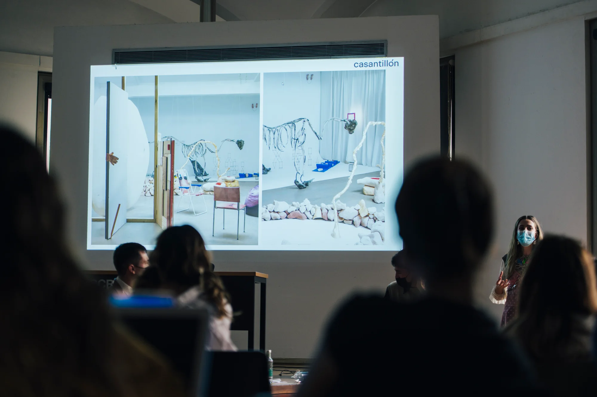

EL CUERPO ENMASCARADO (2022)
programa de talleres / laSADCUM x CCCB
En conexión con la exposición LA MASCARA NUNCA MIENTE (CCCB), propusimos un programa de talleres en torno a la relación entre el cuerpo y la tecnología para reflexionar sobre las formas de la invisibilidad contemporánea del cuerpo.
El comisariado de actividades contaba con ‘DOMESTIC FICTIONS’ taller sobre el espacio doméstico virtualizado, con Casa Antillón, ‘PRESENTAR EL CUERPO EN EL ESCENARIO VIRTUAL’ taller sobre performance en las redes sociales, con Candela Capitán, ‘CAMULFAR EL CUERPO DE LA VIGILANCIA’ taller sobre reconocimiento e identificación faciales, con Mentah y ‘DANCE THE INTERNET’ taller sobre movimiento y cuerpo desde el found footage digital, con Guillem Jiménez; así como los DJsets de JOVENDELAPERLA b2b BERENICE y DA ROCHA.
Más información sobre el ciclo de actividades AQUÍ.
Fotos: Vicenzo Rigogliuso & Alice Brazzit



